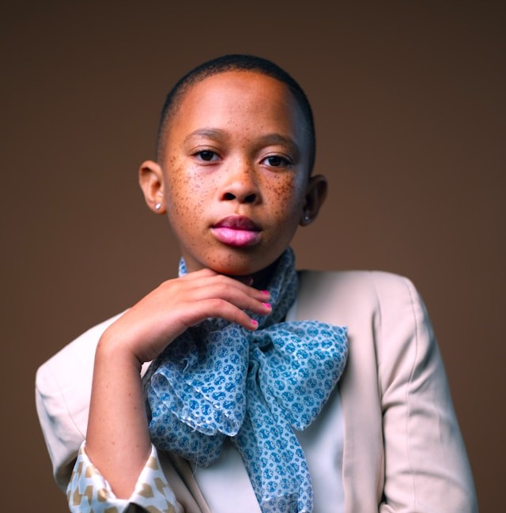

Kayinamura Doreen
I'm a graduate of computer science from Uganda Martyrs University holding a first year degree.
Skills
- database management
- programming languages
- operating systems
Marital Status
I'm single.
Education
- Uganda Martyrs University - Bachelor's degree in Computer Science (2020-2024)
- St. Maria Goretti Secondary School - Uganda Certificate of Education (2016-2019)
- St. Maria Goretti Primary School - Primary Leaving Examination (2010-2015)